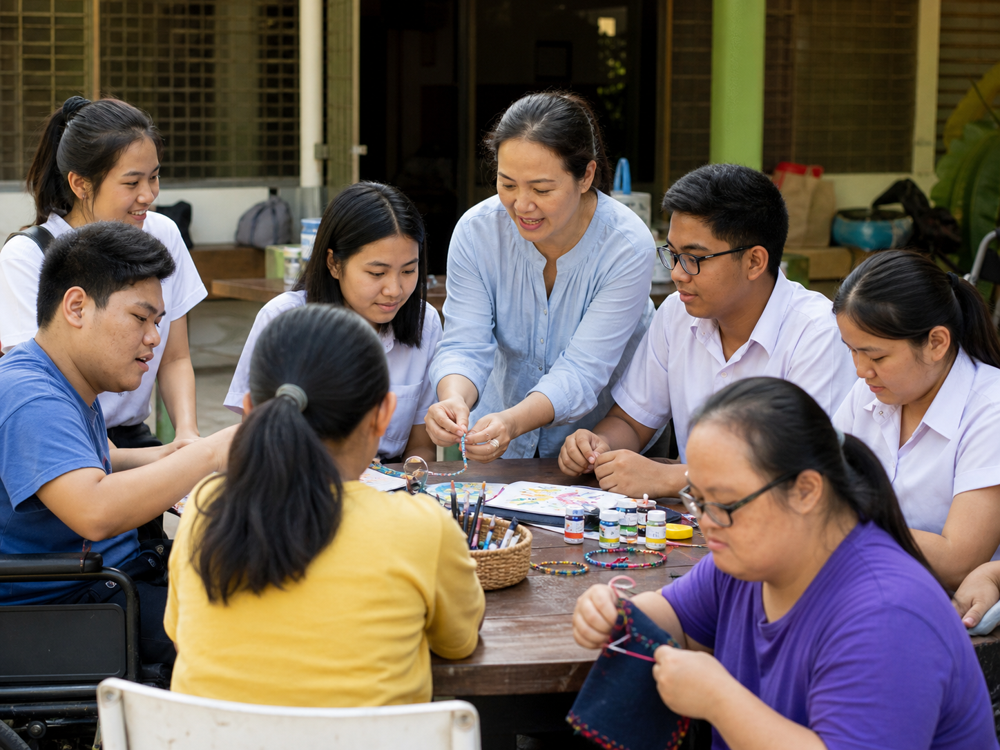

Workshop
Creative making sessions
Students and community members create textiles, cards, bracelets, paintings, or small handmade goods together. The focus is shared creativity, not rushing production.